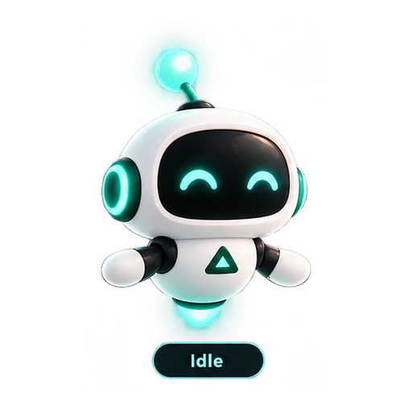
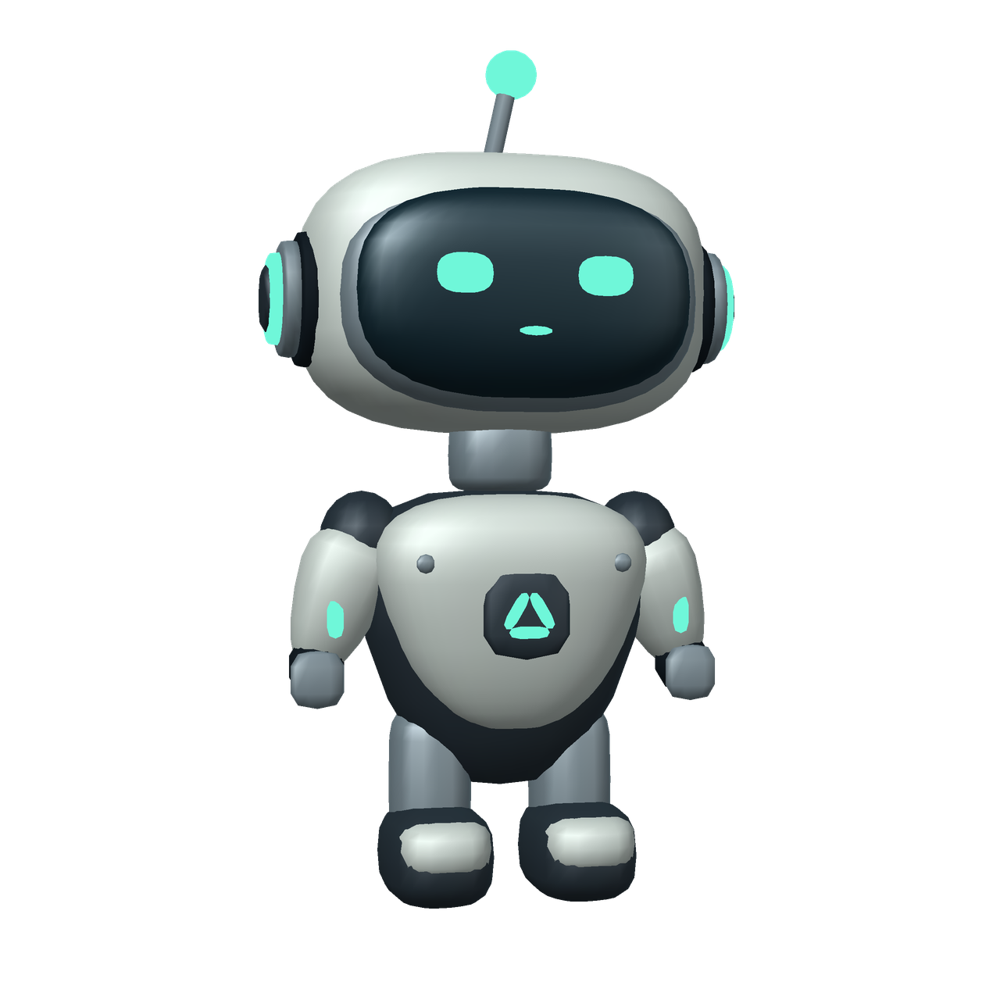

Focus can have a personality.
Meet the little companions in Friction Atlas. See how they settle in for focus, celebrate progress, and get ready to rest.


Atlas MiniIdle
One companion.
Two looks.
Choose your companion and try a mood. Its original and 3D looks react together, right beside each other.
Atlas Mini is free. Each collectible is an optional one-time purchase, with pricing shown by the app store.
Find your kind of cute.
Meet every companion in its original and 3D looks. Atlas Mini is free, and the other characters are optional one-time purchases.


Atlas Mini
Your calm starter companion.
Free · Default

Mochi Bot
Soft, round and extra expressive.
Collectible

Pixel Panda
Playful panda energy for focus days.
Collectible

Neon Scout
Cyber companion with electric reactions.
Collectible

Orbit Pup
A space pup with a warm personality.
CollectibleMeet Aster 01.
An articulated 3D companion prototype with a ceramic shell, a glowing visor, and a tiny wave.
Prototype showcaseAndroid floating overlay
Optional draggable bot over other apps, edge snap, saved position, compact live context and explicit overlay permission.
Windows mini companion
Always-on-top mini window with habit progress, active experiment context and the selected bot skin. Windows does not fabricate Android usage telemetry.
Your companion, your choice.
Use Atlas Mini forever for free or collect additional bot personalities as one-time purchases. Future Pro Lifetime includes all catalog bots; monthly and yearly Pro do not.